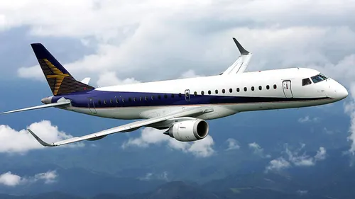

Cessna

Cessna is an American aviation company that has been a major player in the development and manufacture of light aircraft since its founding in 1927. Known for producing small, single-engine planes and business jets, Cessna's aircraft are widely used for general aviation, flight training, and private travel. The company is renowned for its models such as the Cessna 172, one of the most popular training aircraft in the world, and the Citation series of business jets. Cessna's commitment to safety, reliability, and innovation has made it a leading name in the aviation industry.
British Aero space

British Aerospace (BAe) was a prominent British aircraft manufacturer and aerospace company, formed in 1977 through the merger of several key UK aviation firms. It became a leading player in both civil and military aviation, producing notable aircraft such as the Harrier jump jet, the Concorde supersonic airliner (in partnership with France’s Aérospatiale), and a range of commercial and military jets. British Aerospace was known for its engineering excellence and innovation. In 1999, BAe merged with Marconi Electronic Systems to form BAE Systems, a global defense, security, and aerospace giant that continues to thrive today.
/Embraer
Embraer is a Brazilian aerospace company, founded in 1969, that has become one of the world's leading manufacturers of commercial, military, and executive aircraft. Known for its innovation and efficiency, Embraer is particularly recognized for its regional jets, such as the E-Jet series, which are widely used by airlines around the globe for short to medium-haul flights. In addition to its commercial aircraft, Embraer also produces military jets, agricultural planes, and executive aircraft, and is involved in providing aerospace-related services. With a focus on high performance and advanced technology, Embraer has made a significant impact on the global aviation industry.